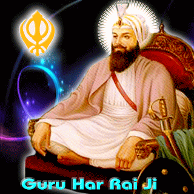

Sikhism


|  |
Mother Name: Mata Nihal Kaur Date of Birth: 16 January , 1630 Age: 31 years Place of Birth: Kiratpur Sahib Wife: Mata Krishen Devi Children: Guru Har Krishan,Baba Ram Rai Guruship: Joti-jot: 6 October , 1661
|
Guru Har Rai Sahib Ji is the seventh Guru of the Sikhs. He was the grandson of Guru Hargobind Sahib Ji. He was born to father Baba Gurditta Ji and mother Nihal Kaur Ji. He was born on January 16th, 1630 at Kiratpur Sahib. He was married in 1697 B.S. (1640 A.D) He had two sons named Ram Rai and Har Krishan Ji. He was appointed to Gurgaddi on March 3rd, 1644. Guru Har Rai Sahib Ji followed the policy of non-violence and popularised the Sikh ideology of self-discipline and love of God. He consolidated the organisation of the Sikhs on peaceful lines. He started dispensary for the sick and poor people. He made Sikhism strong. He was kind hearted mounted with a fountain of love and tenderness. He believed that the greatest sin was to hurt others. He believed in serving Langar with humility and kindness. Once, Guru Har Rai Sahib Ji was called to Delhi by the Emperor Aurangzeb to yield to his cruel designs. The Guru Ji decided not to go to Delhi himself. He sent his elder son Ram Rai to meet with the Emperor and interpret Adi Granth Sahib Ji correctly if he was required to do so. Ram Rai was asked many questions about Sikh and Muslim religions. He did not want to annoy the Emperor. He performed miracles to win laurels from Aurangzeb. He even changed a line from Adi Granth Ji, "Mitti Musalman Ki" to "Mitti Be-Iman Ki" (The dust of Musalman to the dust of treacherous; pg-466) to please the Emperor. Guru Har Rai Sahib Ji Ji rejected the action of changing the sanctity of Gurbani. Due to un-Sikh action, Ram Rai was not found suitable for Guruship. The emperor pressed upon the Guru to accept claim of Ram Rai for Guruship. Ram Rai also tried to persuade his father. The Guru disagreed by saying, "The Guruship is like a tiger's milk which can only be contained in a golden cup. Only he who is ready to devote his life there to is worthy of it. Let Ram Rai not look on my face again". Before his eternal rest on October 6th, 1661, Guru Har Rai Sahib Ji nominated his younger son, Guru Har Krishan Sahib Ji as his succesor.